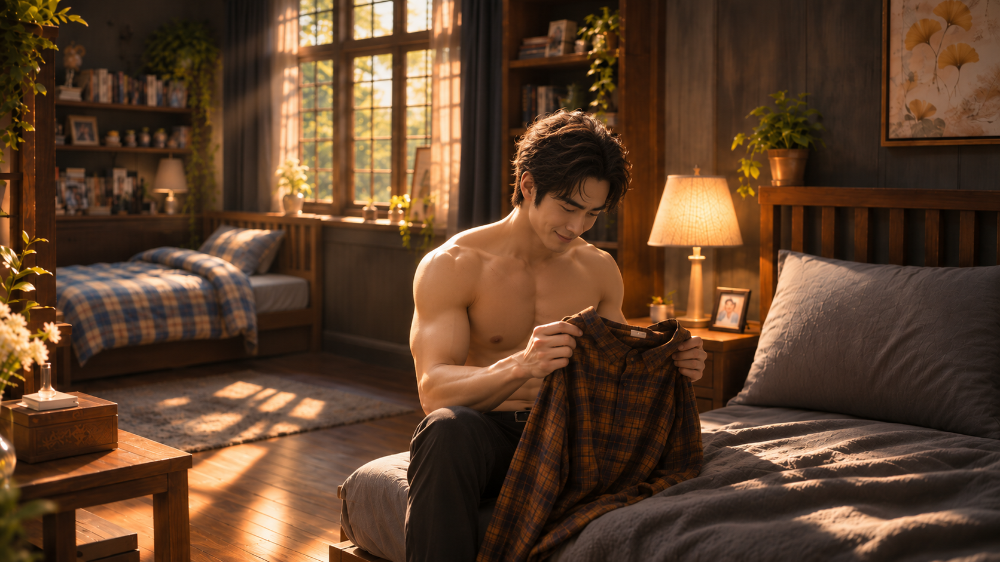
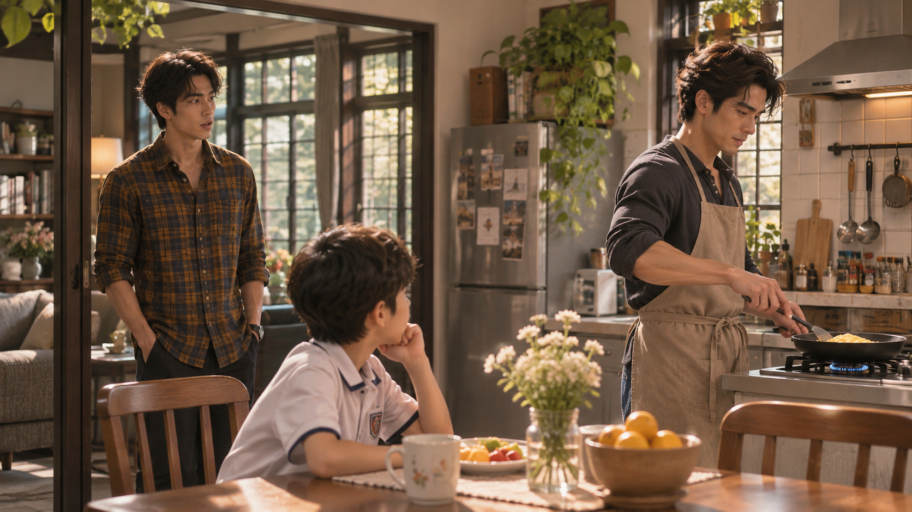
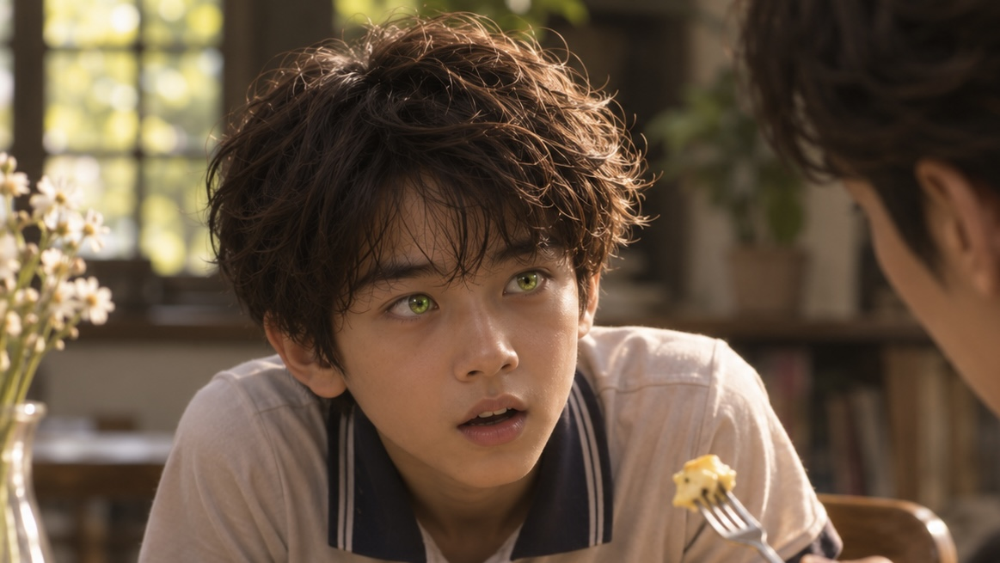
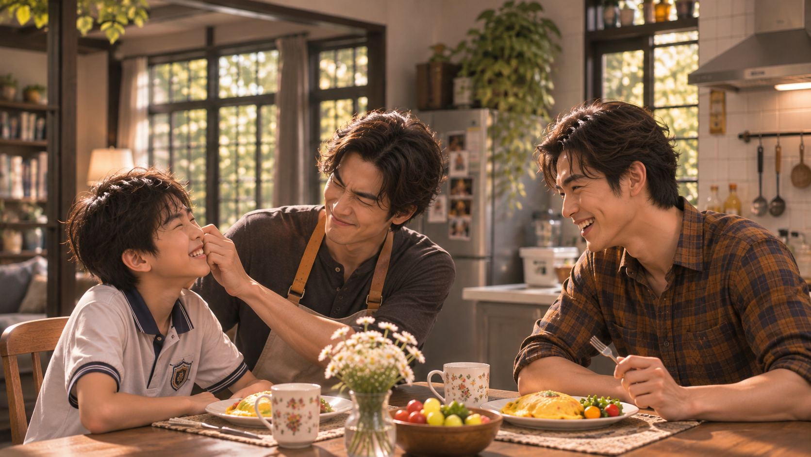
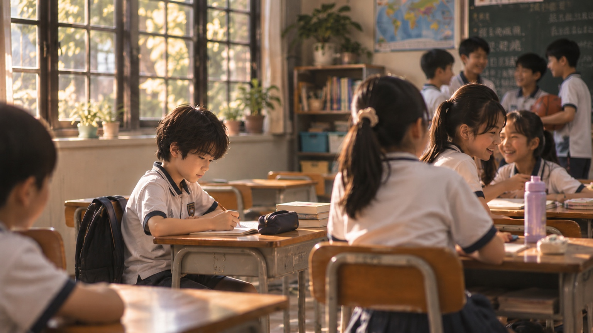
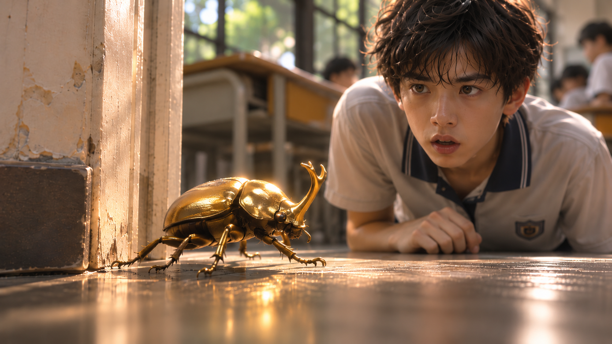
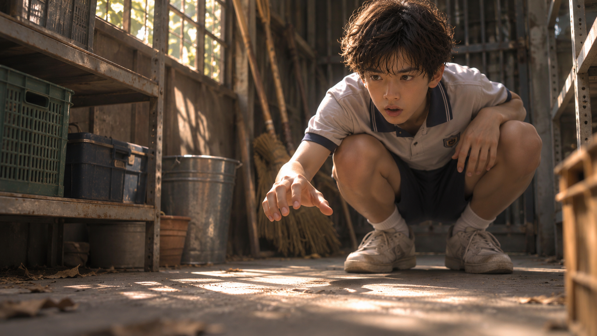

WHITE MAGIC ART STUDIO
第十七章
暴風雨前的寧靜
清晨的陽光穿過窗簾，在木質地板上灑下一片柔和的光影。
景毅緩緩睜開眼睛。
他盯著天花板看了好一會兒，才想起自己身在何處。
桃園・比克花店
還有……梁景皓的房間。
昨晚發生的事情，像一場過於漫長的夢。
從石門山上的衝突，到那場突如其來的襲擊，再到兄弟倆十年來第一次真正敞開心房的談話。
景毅側過頭。
床頭櫃上，整齊地擺著一套衣服。
一件棕色格紋襯衫，搭配深色長褲。
不用想也知道是誰的。
他低頭看了看自己的胸口，
傷已經痊癒，只留下些許淡淡的痕跡。
景毅坐起身，伸手拿過那件襯衫。
「……這傢伙到底有多少件格子襯衫啊。」

他低聲嘀咕。
不過尺寸倒是挺合身。
換好衣服後，景毅走到門邊。
手才剛搭上門把，卻莫名停了一下。
昨晚，他們說了很多話。
關於母親。
關於父親。
關於這十年各自經歷的事情。
甚至連那些過去誰也不願意承認的嫉妒、愧疚與遺憾，都說出口了。
現在想想，反而有點難為情。
景毅輕輕吐出一口氣。
他轉動門把。
門一打開，一股熟悉的香氣便迎面而來。
煎蛋。
還有咖啡。
景毅循著香味走向同層的生活空間。
客廳與餐廳相連，旁邊便是開放式廚房。
餐桌前，一名穿著國小制服的男孩正乖乖坐著吃著早餐，
聽見腳步聲，男孩立刻轉過頭。
「叔叔！」
昱鎧眼睛一亮。
「你醒啦！」
景毅愣了一下。
這聲「叔叔」，他還有些不習慣。
「……早。」
「你身體好了嗎？」
「嗯，沒事了。」
「真的？」
「真的。」
昱鎧仔細打量他。
「可是你昨天看起來超嚴重的耶！」
景毅一時不知道該怎麼回答。
就在這時，廚房傳來一道聲音。
「梁昱鎧，吃飯的時候不要一直講話。」
景毅轉頭。
只見景皓站在爐台前，身上繫著圍裙，一手拿著鍋鏟，另一手正熟練地調整平底鍋的位置。
煎蛋的香氣隨著熱氣緩緩飄散。
景毅看得有些出神。
他實在很難把眼前這個忙著做早餐的男人，和過去那個總是把時間排滿訓練與課業的哥哥聯想在一起。

「醒啦。」
景皓回頭看了他一眼。
「衣服還合吧？」
「……還行。」
「那就好。」
景皓打量了一下弟弟身上的格紋襯衫。
「欸，穿起來還不錯耶。」
「你衣櫃裡是不是全部都是這種衣服？」
「哪有。」
景皓想了想。
「也才一半吧。」
「……」
景毅忍不住笑了一聲。
景皓也跟著笑了笑。
只是兩人的目光短暫交會後，又各自移開。
昨晚那些掏心掏肺的話，似乎讓他們一時還不太習慣這種自然的相處。
「對了。」
景皓像是忽然想到什麼。
「昨天下午我好像把你的眼鏡打壞了。」
「嗯。」
「你近視很嚴重嗎？要不要我等等帶你去配一副？」
景毅停了一下。
「不用。」
「真的？」
「我近視不深。」
「喔，那就好。」
景皓沒有多想，轉身繼續顧著鍋裡的早餐。
景毅則下意識摸了摸自己的鼻樑。
那副沒有度數的眼鏡，戴了這麼多年。
如今突然不戴，竟然還有些不習慣。
不過……
他望著正在廚房忙碌的哥哥。
也許這樣就好了。
「先坐啦，早餐快好了！」
景皓朝餐桌努了努嘴。
景毅走過去，在昱鎧旁邊的位置坐下。
沒過多久，一盤熱騰騰的半熟歐姆蛋便放到他面前。
景毅抬頭。
「……這是我的？」
「不然呢？」
景皓挑眉。
「離家十年而已，你以為我會忘記你喜歡吃半熟蛋喔？」
景毅低頭看著盤子。
金黃色的蛋皮微微鼓起，邊緣煎得恰到好處。
他拿起叉子，切下一小塊送入口中。
蛋液柔軟地化開。
景毅的表情微微一變。
「我爸煮的超好吃對吧！」
昱鎧看到叔叔的表情興奮地問，
「嗯。」
景毅點點頭。
「真的滿厲害的。」
「他還會煮很多東西喔！」
「是喔？」
「嗯！而且他做的咖哩超好吃！」
景毅看向廚房。
景皓正忙著替昱鎧倒熱牛奶。
那個曾經連自己的生活都排得像訓練計畫一樣的哥哥，如今竟然能把一個孩子照顧得這麼好。
還真是……
不可思議。
就在這時，景毅注意到昱鎧正盯著自己。
那雙眼睛裡，隱約泛起一抹翠綠色微光。
景毅微微挑眉。

「怎麼了？」
昱鎧沒有回答。
只是皺起眉頭，像是在努力聽什麼。
「我臉上有東西嗎？」
「奇怪……」
昱鎧歪著頭。
「怎麼會這樣？」
景皓端著咖啡走過來。
一看見兒子的眼睛，立刻明白發生了什麼事。
「梁昱鎧！」
他伸手輕輕敲了一下兒子的頭。
「我不是跟你說過，不可以隨便對別人使用木瞳術嗎？」
「哎唷！」
昱鎧連忙摸摸頭。
「可是我只是想知道叔叔在想什麼嘛！」
「想知道就直接問啊！」
「可是……」
昱鎧轉頭看向景毅。
「我讀不到耶。」
「讀不到？」
「對啊。」
他一臉困惑。
「我明明有用木瞳術，可是什麼都聽不到。」
景毅倒是一點也不意外。
「喔，那應該是我的木瞳術在作用。」
「叔叔也有木瞳術？」
「有啊。」
景皓拉開椅子，在餐桌旁坐下。
「你叔叔的木瞳術叫做『護盾』。」
「護盾？」
昱鎧眼睛一亮。
「是可以變出盾牌嗎？」
「不是那種盾牌啦。」
景皓笑了笑。
「簡單來說，你叔叔不會受到心智能力的影響。」
他指了指自己。
「像我的『共感』，就沒辦法感受到他的情緒。」
接著又指向昱鎧。
「你的『讀心』，也聽不到他的想法。」
「那爺爺呢？」
「爺爺的『記憶』也一樣，沒辦法讀取他的記憶。」
昱鎧張大嘴巴。
「哇……」
景毅喝了口咖啡。
「而且這能力似乎是被動的，我也不用特別啟動。」
「所以叔叔不用做什麼，就可以擋住別人的木瞳術？」
「差不多。」
「好酷喔！」
景皓忍不住插話。
「不過也因為這樣，我從小就覺得你叔叔很難懂。」
景毅瞥了他一眼。
「你自己也沒多好懂吧。」
「有嗎？」
「有。」
兩人對望了一眼。
隨即都笑了。
昱鎧看看爸爸，又看看叔叔。
「所以你們以前感情很好嗎？」
這句話一出，兩兄弟同時安靜了一瞬。
景毅低頭喝了口咖啡。
景皓則伸手拿起吐司。
「……還在努力啦。」
他笑著回答。
景毅沒有反駁。
只是嘴角微微上揚。
景皓很快轉移話題。
「對了，昱鎧的木瞳術就是『讀心』。」
他語氣裡帶著藏不住的驕傲。
景毅看向姪子。
「破心者啊……」
他點點頭。
「很厲害耶。」
昱鎧有些不好意思地笑了。
「沒有啦，我還在學。」
「不過啊。」
景毅放下杯子。
「以後想知道叔叔在想什麼，直接問就好了。」
「真的？」
「嗯。」
「那我可以問一個問題嗎？」
「可以啊。」
昱鎧認真地看著他。
「叔叔。」
「嗯？」
「你真的是我爸的親弟弟嗎？」
景毅愣住。
「……蛤？」
「因為你長得比我爸帥好多喔！」
餐桌安靜了一秒。
「噗！」
景毅差點把咖啡噴出來。
景皓則瞪大眼睛。
「梁昱鎧！」
昱鎧已經笑得東倒西歪。
「幹嘛啦！我只是問問看！」
「你這臭小子！」
景皓伸手捏了捏兒子的臉頰。
「吃你的早餐啦！」
景毅終於忍不住笑出聲。
「哈哈……」

他看著眼前鬥嘴的父子倆。
心裡忽然有種說不上來的感覺。
這樣的早晨，對景皓和昱鎧來說，大概只是再普通不過的日常。
但對他而言，卻是第一次。
而且……
還挺不錯的。
「對了。」
景毅看向昱鎧。
「聽說你最近放學後，都會跟你爸學聖術？」
「對啊！」
昱鎧立刻坐直。
「可是我還不太會。」
「學到哪裡了？」
「現在還在練習讓種子發芽。」
昱鎧有些不好意思地抓抓頭。
「我想趕快學會召喚自己的『術之木』！」
「喔？」
景毅露出一點驚訝。
「你連術之木都知道啦？」
「知道啊！」
昱鎧興奮地點頭。
「我有看爸爸的書！」
景皓在旁邊嘆了口氣。
「何止看書。」
他伸手捏了捏兒子的臉頰。
「這小子知道我們家是聖術師之後，快把我那些書翻爛了。」
「哪有！」
「然後學校功課都不寫！」
「我有寫啦！」
「昨天的數學呢？」
「……」
昱鎧瞬間安靜。
景毅忍不住笑了。
「這點倒是跟你爸小時候不太一樣。」
「叔叔，我爸以前都很認真讀書嗎？」
「算是，但比較像是被逼的。」
「喂！」
景皓立刻抗議。
「我是負責任的學生好嗎。」
昱鎧笑了起來。
景毅接著說：
「不過你想學術之木的話，倒是可以慢慢研究。」
「真的？」
「嗯。」
「像你爺爺的術之木，就是能夠儲存記憶的『忘憂木』。」
昱鎧立刻豎起耳朵。
「那叔叔的呢？」
「我的叫『玄武木』。」
景毅笑了笑。
「非常堅硬，而且能抵擋烈焰的攻擊。」
「哇！」
昱鎧眼睛發亮。
「所以我以後也能有自己的術之木？」
「有機會啊。」
景毅點頭。
「不過要看你的天賦和訓練成果，不是每個人都能輕易做到。」
他停了一下。
「而且木之聖術師的術之木，還有個很奇怪的地方。」
「什麼？」
「到目前為止，還沒有人看過術之木開花。」
「欸？」
昱鎧皺起眉頭。
「為什麼？」
「不知道。」
景毅聳聳肩。
「這到現在還是個未解之謎。」
昱鎧想了一會兒，忽然轉頭看向景皓。
「欸，爸。」
「嗯？」
「可是我好像沒看過你憑空變出植物耶。」
景皓正準備喝咖啡。
動作微微一停。
「……蛤？」
「叔叔說他可以召喚術之木，可是你每次教我，都要先拿種子出來。」
昱鎧一臉認真。
「為什麼啊？」
景毅也轉頭用一種想看好戲的眼神看向哥哥，因為他知道景皓還做不到，
景皓清了清喉嚨。
「咳咳！」
他拿起咖啡喝了一口。
「這個嘛……」
昱鎧期待地看著他。
景毅也沒有移開視線。
景皓放下杯子。
「梁昱鎧！」
「幹嘛？」
「你是不是快遲到了？」
昱鎧猛地看向時鐘。
「啊！」
他立刻從椅子上跳起來。
「真的啦！」
「書包呢？」
「在沙發上！」
「水壺？」
「有帶！」
「聯絡簿？」
「……」
景皓扶額。
「你看吧！」
昱鎧連忙跑去拿書包。
景毅坐在一旁，看著父子倆忙成一團，嘴角始終掛著淡淡的笑意。
下樓前。
昱鎧背好書包，嘴裡還嚼著最後一口吐司。
景皓蹲下身，替他把制服領子整理好。
「等等自己坐公車要小心，知道嗎？」
「知道啦！」
「過馬路要看車。」
「知道！」
「不要邊走邊看手機。」
「我又沒有手機！」
「喔，對齁。」
景皓笑了一聲。
昱鎧無奈地看著爸爸。
「你很囉唆耶。」
「我是你爸耶，不能囉唆一下喔？」
「可以啦！」
景皓拍了拍他的肩膀。
「對了，你今天早上起來，有看到碧雲阿姨嗎？」
昱鎧搖頭。
「沒有耶。」
「奇怪……」
景皓看了一眼樓梯方向。
「這麼早就出門了？」
「可能去送花了吧？」
「也是。」
景皓沒有多想。
「好啦，快去上學。」
昱鎧正準備出門，卻忽然回頭。
「爸！」
「怎樣？」
「你今天會來接我嗎？」
「會啊。」
「那……」
昱鎧的目光越過爸爸，落在餐桌旁的景毅身上。
「叔叔也會在嗎？」
景皓微微一愣。
他轉頭看向弟弟。
景毅愣了一下後，他朝昱鎧笑了笑。
「會。」
昱鎧眼睛瞬間亮了起來。
「真的？」
「嗯。」
「太好了！」
他開心地朝兩人揮手。
「爸！叔叔！掰掰！」
「掰掰。」
「路上小心。」
昱鎧衝下樓梯準備出門外。
「欸！不要用跑的！」
景皓連忙朝樓梯下喊。
「注意交通！」
「知道啦——！」
孩子的聲音逐漸遠去。
喀。
門關上了。
屋裡忽然安靜下來。
景皓站在樓梯前，確認兒子已經走遠，才慢慢轉身。
景毅手裡端著咖啡。
兩人對望了一眼。
「……你兒子滿有趣的。」
景毅忽然說。
景皓笑了笑。
「吵死了吧？」
「還好。」
景毅低頭喝了一口咖啡。
「我滿喜歡他的。」
景皓的腳步微微停住。
「……真的？」
「嗯。」
景皓走回餐桌，伸手拿起自己的咖啡杯。
只是那句話，卻讓他心裡悄悄鬆了一口氣。
這十年來，他很少想像昱鎧與梁家其他人見面的情景。
景瑜是例外。
妹妹一直知道昱鎧的存在，也願意接受這個孩子。
可其他人呢？
尤其是景毅。
過去那些年，他們兄弟倆幾乎像陌生人。
景皓不確定弟弟會怎麼看待自己。
更不確定，他會不會接受這個在家族原本安排之外出生的孩子。
他不是沒有擔心過。
只是昨晚的事情太多，他還來不及好好想這些。
直到剛才。
景毅很自然地說，他喜歡昱鎧。
沒有追問。
沒有評價。
也沒有因為孩子的身世而露出任何為難。
彷彿昱鎧本來就該是他的姪子。
景皓低頭看著杯中的咖啡。
嘴角不自覺地揚了起來。
「……謝啦。」
景毅抬頭。
「謝什麼？」
「謝謝你喜歡他。」
景毅望著哥哥。
過了一會兒，才淡淡地說：
「他也是我姪子啊。」
景皓沒有立刻回答。
只是輕輕點頭。
「嗯。」
他又喝了一口咖啡。
「也是。」
景毅看著他。
忽然覺得，眼前這個哥哥真的變了很多。
十年前的景皓，總是把事情安排得井井有條。
無論課業、訓練，還是父親交代的任務，他都像是永遠知道下一步該怎麼做。
可現在，他會穿著圍裙忙著煎蛋。
會因為兒子沒寫功課而頭痛。
會在孩子出門前，一遍又一遍地提醒他注意安全。
甚至還會因為弟弟一句「我喜歡他」，露出那麼明顯的安心。
景毅有些羨慕。
不是羨慕昱鎧有個多麼厲害的父親。
而是羨慕他們之間，那種不需要刻意證明什麼，就能自然親近的關係。
他從小就很崇拜父親。
梁晉輝在他眼裡，一直是個了不起的人。
不只是茂陽的董事長，更是一名強大的聖術師。
他總希望有一天，自己也能成為像父親那樣的人。
只是父親的目光，似乎總停留在哥哥身上。
景皓的訓練。
景皓的天賦。
景皓將來能否成為木翼。
那些年，他聽過太多次了。
他知道哥哥承受著很大的期待。
但那時候的他，並不覺得那是負擔。
反而有些羨慕。
至少父親總是關注著哥哥的一舉一動。
而自己呢？
景毅低頭看著杯中的咖啡。
其實父親並沒有虧待過他。
他想學的東西，父親願意教。
遇到困難時，父親也會給他建議。
甚至在許多重要的決定上，父親都給了他相當大的自由。
只是過去的景毅，似乎總把那些視為理所當然。
反而一直在意著，父親究竟有多重視哥哥。
直到昨晚。
景皓對他說的那番話，再次浮現在腦海裡。
「爸把醫院交給你，不是因為我不在。」
「是因為他相信你有能力做好。」
景毅當時沒有多說什麼。
可那句話，卻一直留在心裡。
茂陽醫院。
那是父親花費多年心血建立起來的事業。
他怎麼可能隨隨便便交給一個自己不信任的人？
景毅忽然想起，父親宣布由他接任院長時的神情。
沒有太多讚美。
也沒有刻意鼓勵。
只是很平靜地把那份責任交到他手上。
當時的自己，竟然還在想——
如果哥哥沒有離開，父親是不是就不會選擇他？
如今想來，那似乎不是一個公平的問題。
對父親不公平。
對哥哥也是。
景毅輕輕吐出一口氣。
他又望向正在收拾餐具的景皓。
原來，哥哥也會有這樣的一面。
會替孩子準備早餐。
會擔心他上學遲到。
會因為兒子一句玩笑話，就像個普通爸爸一樣跟他鬥嘴。
這些年，哥哥究竟是怎麼過來的？
景毅不知道。
但他突然覺得，自己以前或許真的太在意誰比較受到父親重視了。
在意到連父親給過自己的那些信任，都差點忘了。
「幹嘛？」
景皓的聲音打斷他的思緒。
「你一直看那個杯子做什麼？」
「沒有。」
景毅收回目光。
「只是覺得……」
「嗯？」
「你真的變很多。」
景皓愣了一下。
「有嗎？」
「嗯。」
景毅端起咖啡，笑了笑。
「至少以前的你，不會一大早穿著圍裙，在廚房裡忙成這樣。」
「廢話，我現在可是專業奶爸。」
「看得出來。」
景毅低頭喝了一口咖啡。
過了一會兒，又補上一句。
「……滿好的。」
景皓望著他。
這次沒有再開玩笑。
「嗯。」
他輕輕點頭。
「謝謝。」
窗外傳來遠處公車駛過的聲音。
陽光落在餐桌上，照亮了兩只還沒收走的咖啡杯。
兄弟倆沒有急著起身。
這個早晨，似乎還可以再慢一點。
昱鎧的學校
走進教室時，昱鎧照例向幾個同學打了招呼。
「早啊！」
「……早。」
回應比以前少了些。
有幾個同學只是勉強笑了笑，便轉過頭繼續聊天。
昱鎧的腳步微微一頓。
他知道為什麼。
一個禮拜前，他的木瞳術第一次覺醒。
那天，他與齊軒發生了衝突。
事情發展得太突然。
連昱鎧自己都還沒弄清楚究竟發生了什麼，就已經聽見了齊軒心裡那些原本不該被任何人知道的事情。
當時的他，根本不知道該怎麼控制那股力量。
而隔天回到學校，情況更糟。
他只是走進教室。
那些沒有說出口的聲音，便一個接著一個傳進腦海。
他真的能知道別人在想什麼嗎？
那我以後是不是不能亂想事情？
有點可怕耶……
昱鎧當時根本不知道該怎麼讓那些聲音停下來。
他只知道，原本熟悉的同學，忽然變得有些陌生。
直到這幾天，在爸爸的指導下，他才漸漸學會控制木瞳術。
現在，只要自己不主動使用，就不會再隨便聽見別人的心聲。
可是……
即使他已經能控制了，同學們的態度似乎也沒有立刻恢復。
昱鎧走到自己的座位。
前面的座位上，小安正低頭整理書包。
「早啊，小安。」
小安抬起頭。
「喔，早。」
「你昨天的數學寫完了嗎？」
「嗯。」
「最後一題你會嗎？我昨天算好久。」
「……還好。」
小安說完，又低下頭。
昱鎧原本還想說些什麼。
最後只是點點頭。
「喔。」
他拉開椅子坐下。
把書包放好。
拿出課本。
再把鉛筆一支一支排整齊。
教室裡依然很熱鬧。
有人在聊天。
有人在交換早餐。
也有人趁老師還沒來，趕著補完作業。
一切看起來和平常沒什麼不同。
只是昱鎧總覺得，自己好像被隔在那些聲音之外。

他低頭看著桌面。
其實他很想知道，小安現在到底在想什麼。
只要稍微使用木瞳術，或許就能知道。
可是……
他想起爸爸早上說的話。
「想知道就直接問啊！」
昱鎧摸了摸自己的眼睛。
最後，還是沒有使用木瞳術。
他不想再讓大家害怕了。
明明那天是齊軒先做錯事。
可到最後，大家記得的，似乎只有自己說出了那些別人不願意讓人知道的事情。
昱鎧抿了抿嘴。
心裡有點悶。
不是生氣。
只是……
有點孤單。
就在這時。
教室門邊，忽然閃過一道細小的金光。
昱鎧抬起頭。
「……咦？」
他眨了眨眼。
一隻金色的獨角仙，正緩緩沿著門框下方爬行。
牠的甲殼在陽光下泛著奇異的金屬光澤。
頭上的角向前伸出，六隻細小的腳有規律地交替移動。
昱鎧愣住了。
「……金色的？」
他忍不住站起身。
那隻獨角仙像是察覺到他的目光，忽然停了一下。
隨後，繼續往走廊爬去。
昱鎧的好奇心瞬間被勾了起來。
他以前從來沒看過這種顏色的獨角仙。
而且……
不知道為什麼。
牠給人的感覺，好像不只是一隻普通昆蟲。

「昱鎧？」
小安抬起頭。
「你要去哪？」
「我出去一下。」
「可是快上課了耶。」
「我很快回來！」
昱鎧說完，便跟著那道金色身影走出教室。
小安望著他的背影。
皺了皺眉。
最後，還是低頭繼續整理課本。
學校後方的倉庫
金色獨角仙沿著走廊緩緩前進。
昱鎧一路跟著。
牠有時停在牆邊。
有時又鑽進花圃旁的陰影裡。
每當昱鎧以為自己跟丟了，總會在不遠處重新看見那抹金光。
「等等我啦……」
昱鎧小聲嘀咕。
不知不覺間，他已經來到學校後方。
這裡靠近後門，平常很少有學生經過。
一間舊倉庫的門半掩著。
裡頭堆放著壞掉的課桌椅、老舊電風扇，以及一箱箱等待整理的雜物。
金色獨角仙沿著門縫爬了進去。
昱鎧停在門口。
他回頭看了一眼。
走廊空蕩蕩的。
遠處隱約傳來學生的說話聲。
「……一下下就好。」
他輕輕推開門。
吱呀。
老舊的門軸發出細微聲響。
倉庫裡有些昏暗。
幾道陽光從高處的窗戶斜斜照進來，照亮空氣中緩緩飄動的灰塵。
昱鎧小心地繞過一張倒放的課桌。

「你跑去哪了……」
他低頭尋找。
終於，在一排紙箱旁，再次看見那隻金色獨角仙。
「找到你了！」
昱鎧蹲下身。
牠的甲殼光滑得不可思議。
簡直像是用黃金雕出來的。
昱鎧忍不住露出笑容。
「你不是普通的蟲，對吧？」
獨角仙沒有動。
「你是不是靈獸啊？」
他想起爸爸最近教過自己的事情。
除了術器使與元素使，聖術師之中還有能與靈獸建立連結的人。
難道……
這就是靈獸？
昱鎧越想越興奮。
「我跟你說喔，我爸也是聖術師。」
他壓低聲音，像是在分享什麼祕密。
「我也是。」
獨角仙依然沒有反應。
昱鎧伸出一根手指。
「你不用怕，我不會傷害你。」
就在他的指尖快要碰到甲殼時——
那隻獨角仙忽然停住。
金色的身影微微一晃。
下一秒。
消失了。
「……咦？」
昱鎧眨了眨眼。
他把手往前伸了一點。
什麼都沒有。
「奇怪？」
他站起身。
「去哪了？」
昱鎧轉頭看向四周。
紙箱。
舊桌椅。
壞掉的電風扇。
還有牆角堆放的清潔工具。
一切都很正常。
可是……
倉庫似乎突然安靜得有些奇怪。
連窗外的風聲，都像是變小了。
昱鎧皺起眉頭。
「……什麼味道？」
他吸了吸鼻子。
空氣裡，隱約飄來一股刺鼻的氣味。
有點像燒焦的塑膠。
昱鎧轉過頭。
「誰在燒東西啊……」
就在這時。
啪滋。
一道極細微的聲音，從倉庫深處傳來。
昱鎧停下腳步。
啪滋。
又是一聲。
他循著聲音望去。
牆邊，一處老舊的電線交接位置，正閃爍著微弱的紅色光點。
昱鎧愣了一下。
「……那是什麼？」
紅光忽明忽暗。
啪滋。
這次，他看清楚了。
是一小點火星。
昱鎧下意識往後退了一步。
「……欸？」
空氣中的焦味，似乎又濃了一些。
他忽然有種不太好的預感。
教室・同時
噹——噹——噹——
上課鐘聲響起。
原本吵鬧的教室，漸漸安靜下來。
王詩涵拿著出席表與一疊學習單走進教室。
「好，大家回座位。」
學生們陸續坐好。
詩涵將資料放到講桌上。
「班長，幫老師看一下，有誰還沒到？」
班長站起身，快速掃過教室。
「報告老師。」
「嗯？」
「昱鎧不在。」
詩涵抬起頭。
「梁昱鎧？」
「對。」
她看向那張空著的座位。
書包還在。
課本也已經拿出來了。
顯然人剛才還在教室。
「有人知道他去哪裡嗎？」
小安舉起手。
「老師，我剛剛看到他走出教室。」
「他有說去哪裡嗎？」
「沒有。」
詩涵皺起眉。
「什麼時候出去的？」
「就……上課前沒多久。」
詩涵看了一眼門口。
原本只是學生暫時不在座位，並不是什麼罕見的事。
可不知道為什麼。
她忽然覺得有些不對勁。
下一瞬間。
一股異樣的能量波動，隱約掠過她的感知。
詩涵的神情微微一變。
身為火之聖術師，她對周遭能量與熱度的變化，比一般人敏銳得多。
那股感覺很短暫。
卻讓她心頭一沉。
她再次看向昱鎧的空位。
「……」
片刻後，她放下出席表。
「班長。」
「是！」
「先幫老師維持一下秩序。」
她拿起桌上的學習單，交給小老師。
這些先發下去，大家安靜完成。」
小老師連忙接過。
「老師，你要去哪？」
「我出去一下。」
詩涵走向門口。
腳步比平常快了許多。
「所有人都待在教室，不要亂跑。」
說完，她推門而出。
教室裡的學生面面相覷。
小安轉頭看了一眼昱鎧的空位。
不知怎麼的，他忽然想起剛才昱鎧離開時的模樣。
那時候，昱鎧似乎正專心看著什麼。
可是……
他明明什麼也沒看見。
倉庫裡。
昱鎧仍站在原地。
他望著牆角那點忽明忽暗的紅光。
空氣中的焦味，越來越明顯。
而剛才那隻金色獨角仙——
早已不見蹤影。
窗外的陽光依然明亮。
遠處操場上，隱約傳來學生們活動的聲音。
一切看起來，仍是個再平常不過的早晨。
只是沒有人知道。
有些事情，已經悄悄開始了。